From Monday's file to driver sheets, step by step
A picture guide for TABLE staff. Every screenshot uses made-up sample data, with no real families. Most weeks take about five minutes. New apartment complexes take a few extra minutes, once.
- 1. Every MondayUpload the file and check the routes
- 2. Apartment complexesSet up buildings once, use every week
- 3. Hard-to-find housesPin the exact driveway
- 4. Print & sendWhat drivers get
- 5. Keep your pins safeBackups and common questions
1. Every Monday
Export the week's file the way you already do (the Routific export or the Monday spreadsheet), then open the app.
1 The first time, read “How this works”
It opens by itself on your first visit. You can reopen it any time from the top right.
Always use the same browser on the same computer. Your apartment building pins are saved in that browser.

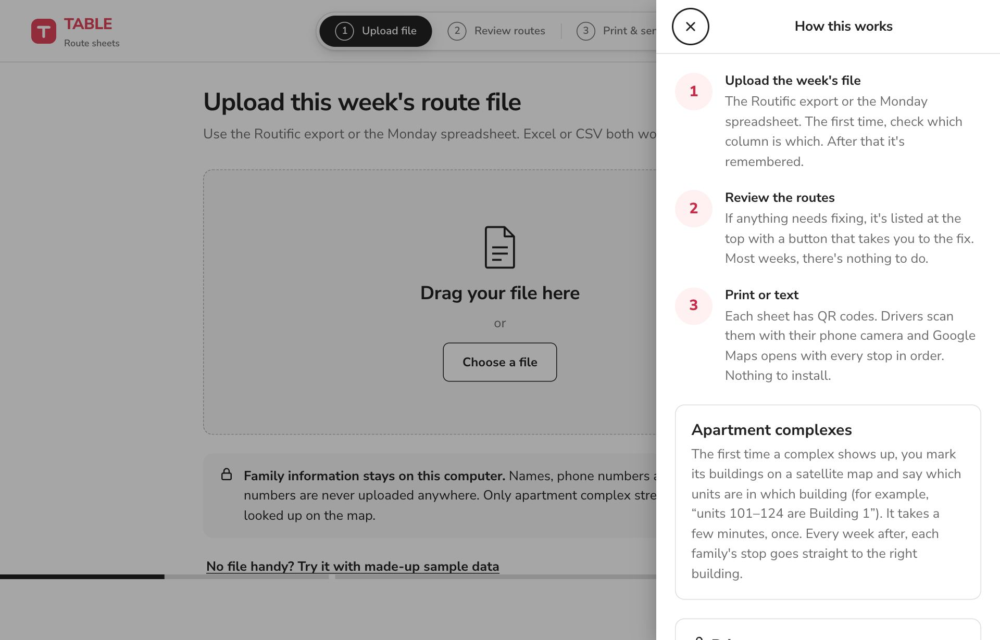
2 Upload the file
Drag the file onto the page, or click Choose a file. Excel (.xlsx) and CSV both work.
Family names, phone numbers and apartment numbers never leave your computer.

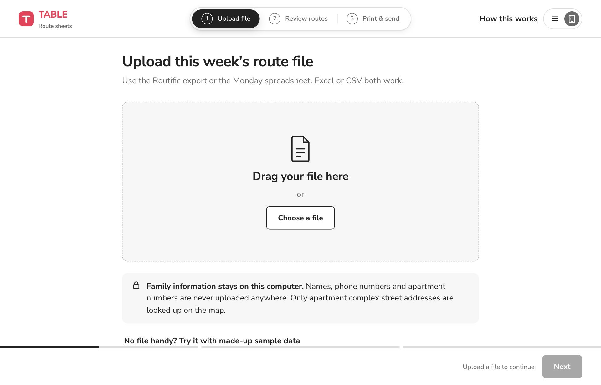
3 Check the columns (first time only)
The app guesses which column is which and shows an example from your file next to each one. If a guess is wrong, pick the right column from the list.
Only Route number and Street address are required. Click Use these columns.
Next week, if the file has the same columns, this step is skipped.

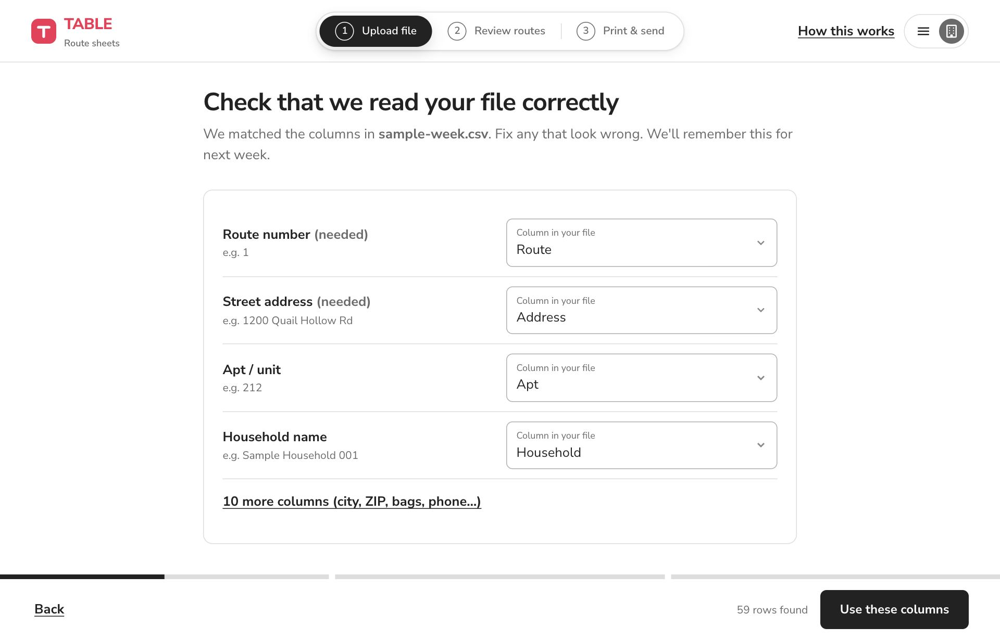
4 Look at “Needs attention”
Everything that needs fixing is listed in one place at the top, with a button that takes you straight to the fix.
- Green “Everything is ready”: nothing to do. Skip to Print & send.
- “Complexes need building locations”: a new apartment complex. See section 2.
- “New units have no building”: a family moved into a unit your rules don't cover yet.
Below that, routes are listed on the left. Click one to see its driver sheet on the right.
You can always continue. Anything unresolved just goes to the complex's main address, like it does today.

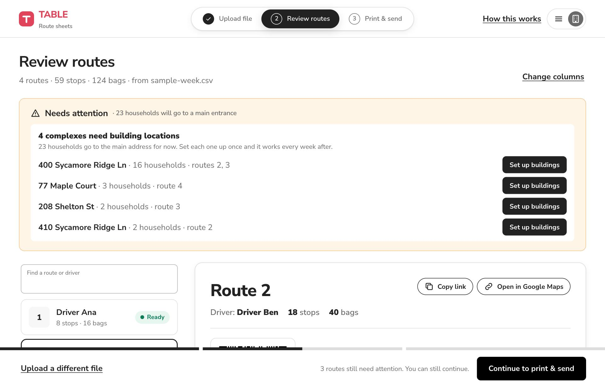
2. Setting up an apartment complex
Usually every household in a complex lands on the leasing office, and drivers hunt for the right building. Set a complex up once, and every week after, each family's stop goes straight to their building.
1 Before: every unit goes to the front entrance
On the driver sheet, apartment stops show a warning: “Goes to the main entrance: buildings not set up.”
Click Set up buildings on the warning or in “Needs attention”.
If two families just share a house (a duplex), click Not an apartment? Pin this house instead.

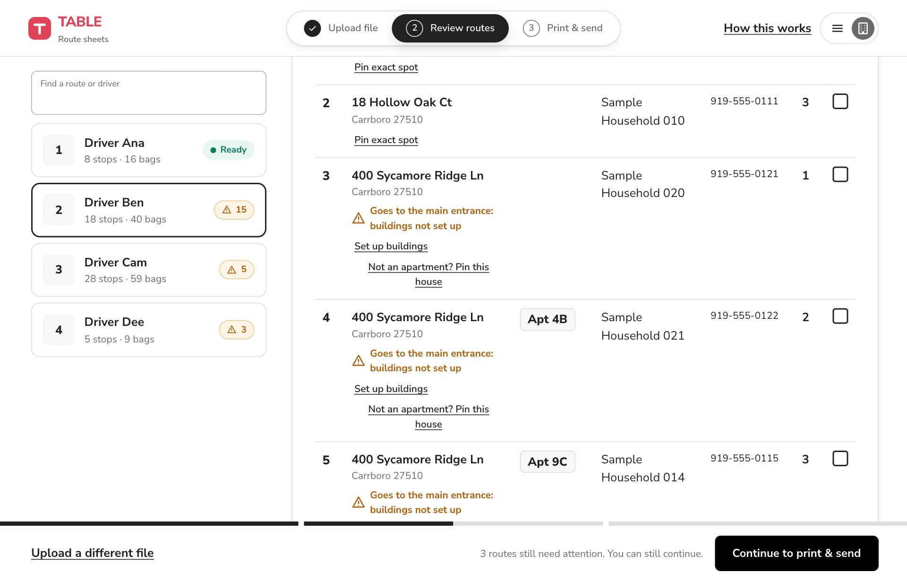
2 The map opens on the complex
You'll see a satellite photo with building outlines drawn in white. The outlines come from OpenStreetMap, so most buildings are already traced.
Switch to Streets to see road names.
If the outlines don't load (the free map server is sometimes busy), click Try again, or use Drop a pin and click each building yourself.

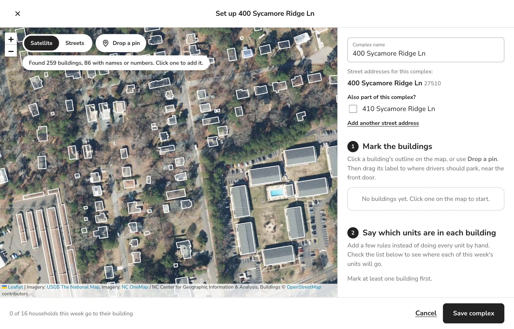
3 Click each building
Click a building's outline to add it. It turns red and gets a label. If OpenStreetMap knows the building's name or letter, it's filled in for you.
- Rename buildings the way drivers will see them (“Building C”, “400”, “Back row”).
- Drag the label to where a driver should park, near the front door. Google Maps sends drivers to that exact spot.
- Add a note if it helps: “Enter from Sycamore Ln side”, “Gate code at office”.
If the complex has more than one street address, tick it under “Also part of this complex?”

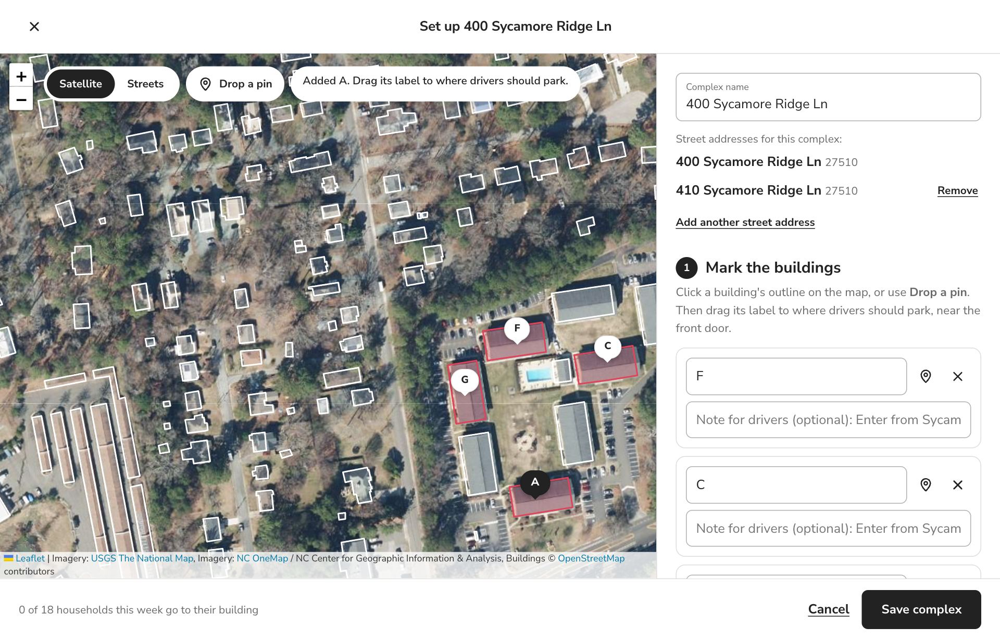
4 Say which units are in each building
Add a few simple rules instead of assigning every unit by hand:
- A range: 101 to 124 → Building 1
- Starts with: 2 → Building 2 (201, 215, 2B…)
- Ends with: B → Building B (4B, 11B…)
- Looks like: 1xx → Building F (x means any digit)
- One unit: 7 → Office
- Every other unit: everything left over
Ask the leasing office for their site map. Units usually follow the building number.

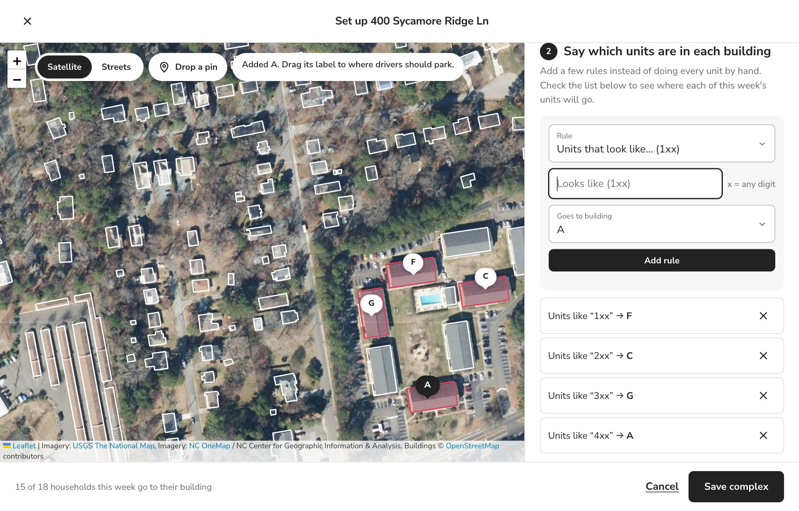
5 Check this week's units
The list shows every unit in this week's file and which building it goes to.
Units in orange don't match any rule. Click one, pick its building, and click Save.
When it looks right, click Save complex.

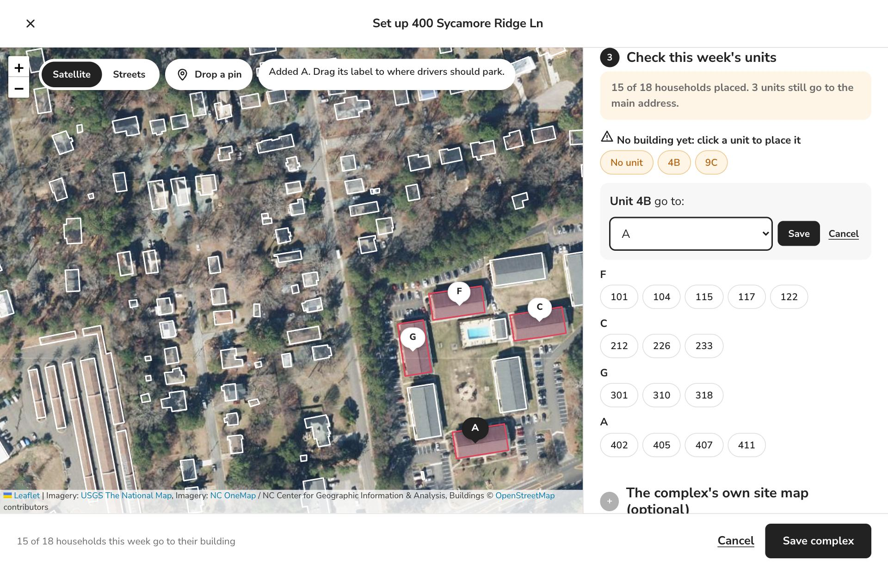
6 Done, for every week after
The complex drops off the “Needs attention” list. If a family later moves into a unit your rules don't cover, you'll see “New units have no building”. Click Add units to buildings and place it the same way.

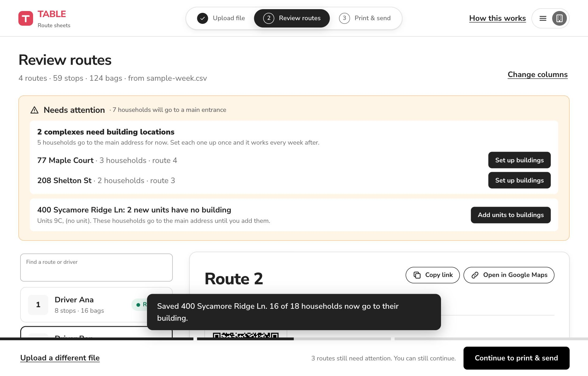
3. Hard-to-find houses
For long rural driveways or houses Google gets wrong.
1 Pin the exact spot
On the Review page, click Pin exact spot under any address.
Drag the red pin to the driveway or front door, or click the map to move it. Add a note if it helps, then Save pin.
From then on, that household's stop goes straight to the pin, every week.

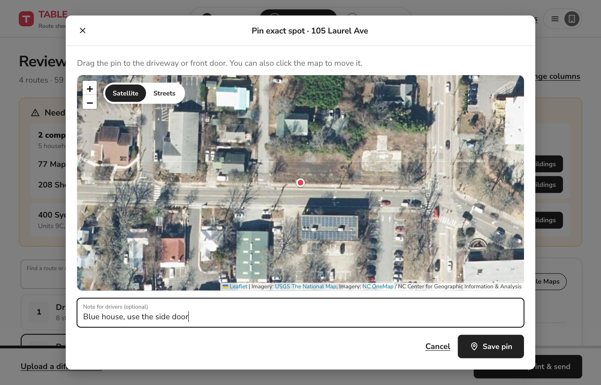
4. Print & send
Drivers get paper, a QR code, or a text with a link. They don't need to install anything.
1 Print, or copy links to text
Click Continue to print & send, then:
- Print driver sheets: one route per page.
- Copy link next to a route, then paste it into a text to that driver.
- Copy all links: every route at once.
If you changed any buildings, you'll be reminded to download a backup. Do it! See section 5.

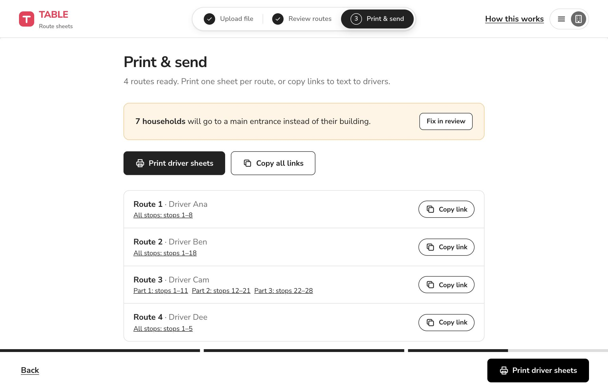
2 What drivers see on paper
Each route sheet has the route number, the driver, the stop and bag counts, a QR code, and a numbered list of stops with a checkbox for each.
Apartment stops show the unit and the building in big type. Stops in the same complex are grouped building by building, so drivers don't zig-zag.
To start, the driver scans the QR code with their phone camera. Google Maps opens with every stop in order, starting from wherever they are.

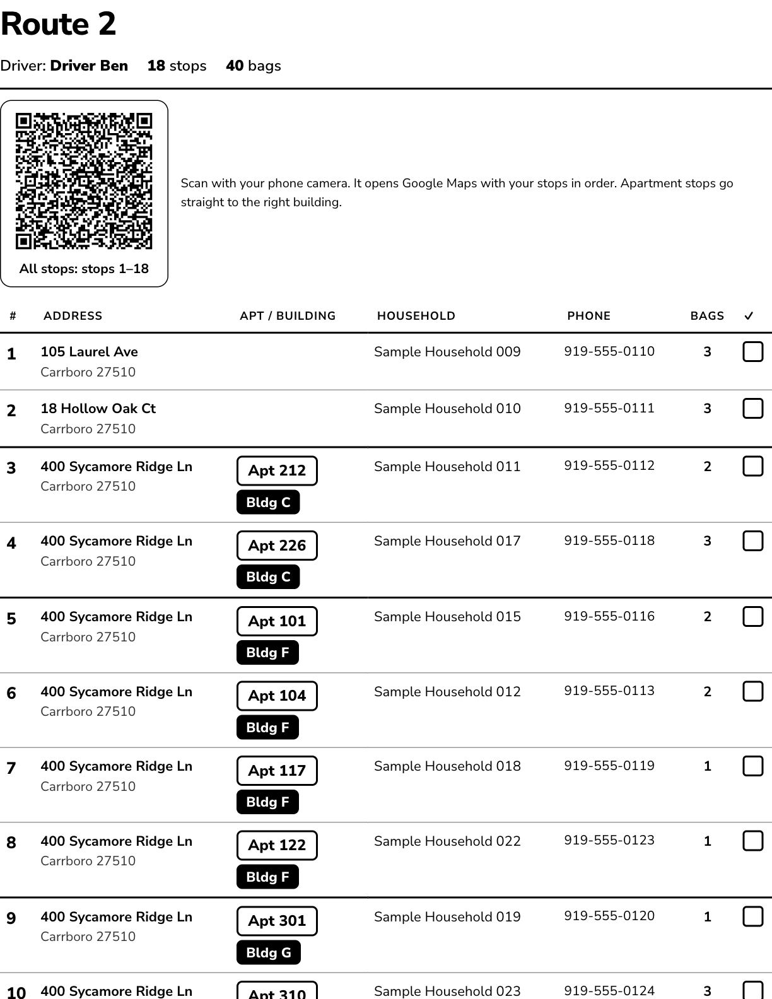
3 Long routes come in parts
Google Maps can only hold about 10 stops in one link, so long routes get Part 1, Part 2, Part 3. When a driver finishes Part 1, they scan Part 2.
Several apartments in the same building count as one stop.
A driver who opens links in a phone web browser without the Google Maps app can only use 4 stops per link. For them, set Print & send → Settings → Stops per Google Maps link to 4.

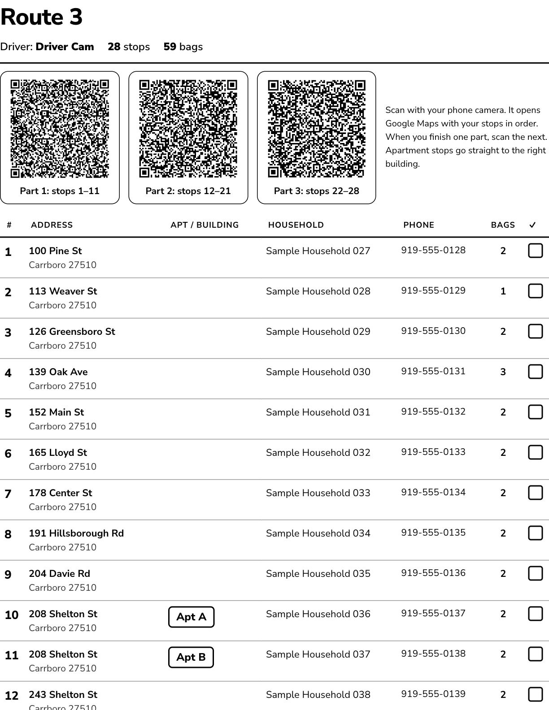

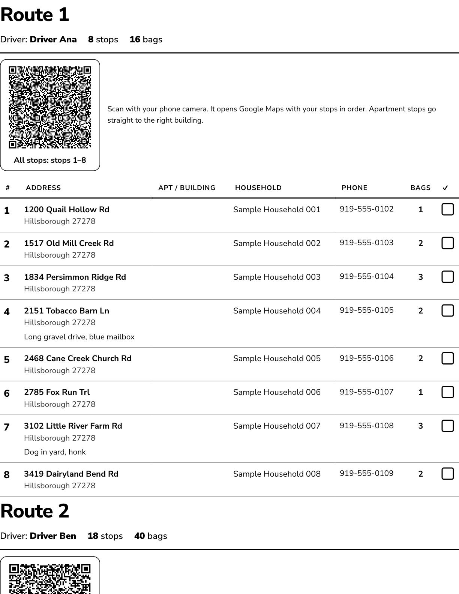
5. Keep your pins safe
Building pins are saved in your browser on this computer, not online. A backup file protects them.
1 Back up after changes
Click the menu button (☰) at the top right, then Download a backup. Save the file to TABLE's shared drive.
On a new computer, or if the browser is ever cleared, use Menu → Restore from a backup.
Menu → Saved complexes & pins lets you edit or delete anything you've set up.
- Does any family information get uploaded?
- No. Names, phone numbers and unit numbers stay on your computer. Only a complex's street address is looked up on the map, once.
- What if I skip “Needs attention”?
- Nothing breaks. Those households go to the main address, like today.
- Do drivers need an app?
- No. The QR code or link opens Google Maps. Most drivers already have the Google Maps app.
- A driver says the building was wrong.
- Open Menu → Saved complexes & pins → Edit, then drag that building's label to the right spot or fix the rule, and save.
- Can other staff see my complexes?
- Not yet. Send them your backup file and have them restore it. Shared setups are planned for later.